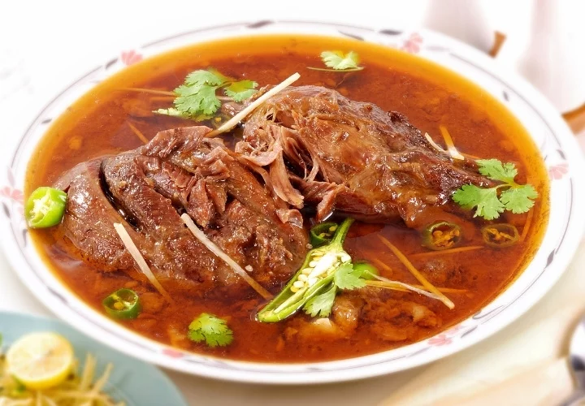
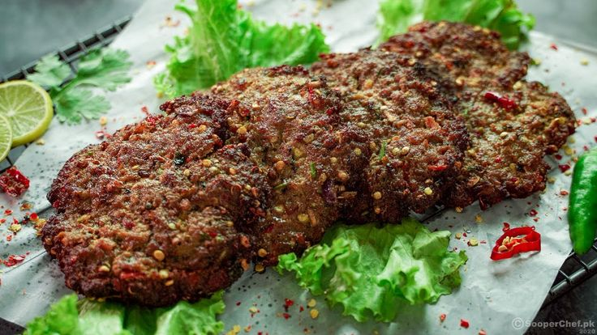

Pakistani food is famous for its rich flavors, spices, and aroma. Each region of Pakistan has its own special dishes, but all of them reflect the country’s love for bold and delicious tastes.

Popular Dishes

Biryani – a flavorful rice dish with meat and spices

Nihari – a slow-cooked beef stew often eaten for breakfast

Chapli Kebab – a spicy fried meat patty from Khyber Pakhtunkhwa

Haleem – a thick dish made with wheat, lentils, and meat
Samosas – crispy pastries filled with potatoes or meat
Street food such as gol gappay, chaat, and kebabs is very popular. Desserts like gulab jamun, kheer, and jalebi are enjoyed at festivals and celebrations. Tea, especially chai, is an important part of daily life.